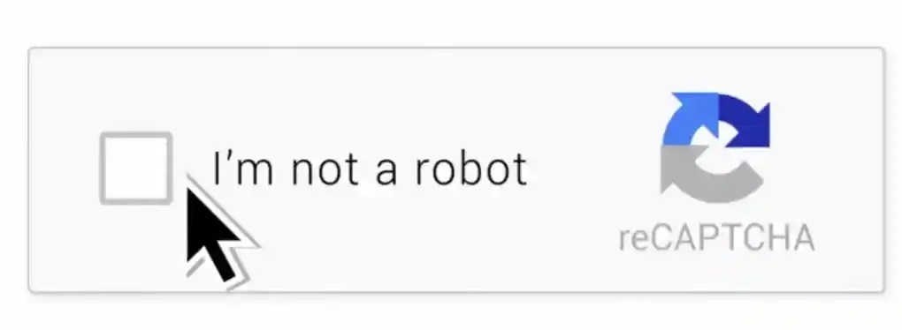
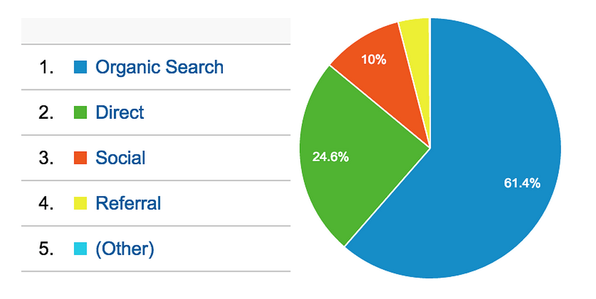

The process of summarizing and evaluating the flow of information(Web Traffic) from a website using analytic tools to optimize web usage.
Useful tool for research when assessing the consumer market.
Involves collecting, aggregating, organising and visualising website data.
Using organised data to draw conclusions.
What Is Web Traffic Analysis?
What can web analytics do for me?
Improve business and marketing strategies.
Targeting Market Segment Development
Enhance Spend-to-Sales Ratios
Boost Lead Generation Success
Web Traffic
Overall number of visitors to a website, including information sent and received by users regarding where they originated from and how they navigated to that page.
This does not usually include traffic generated by web bots.

Web Traffic

Examples of data collected:
web traffic sources
referral sites
page views
paths taken
conversion rates.
Web Analytic Tools
Analysis Tools measure the key metrics of your website through different parameters in order to highlight areas that require improvement or adjustments depending on the result.